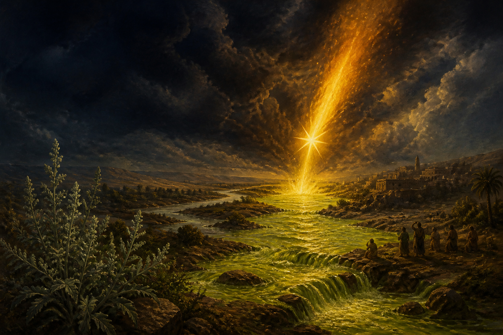

The text
Revelation 8:10–11
“The name of the star is Wormwood. A third of the waters became wormwood, and many people died from the water because it had been made bitter.”
The passage belongs to the third of seven trumpet judgments. The first affects the land, the second the sea, the third the rivers and springs, and the fourth the lights of heaven. The repeated fraction—one third— makes the vision catastrophic but not yet total.
The Greek
Ἄψινθος / apsinthos
καὶ τὸ ὄνομα τοῦ ἀστέρος λέγεται ὁ Ἄψινθος·
The key noun is ἄψινθος (apsinthos), the Greek word translated “wormwood.” In the sentence it names the star, then reappears in the accusative form ἄψινθον for the bittered water. The word is related to the later name absinthe, but the biblical image is not describing a distilled spirit or its thujone content.
Greek text: Revelation 8:11 Greek Text Analysis · lexical entry: ἄψινθος, Strong’s G894